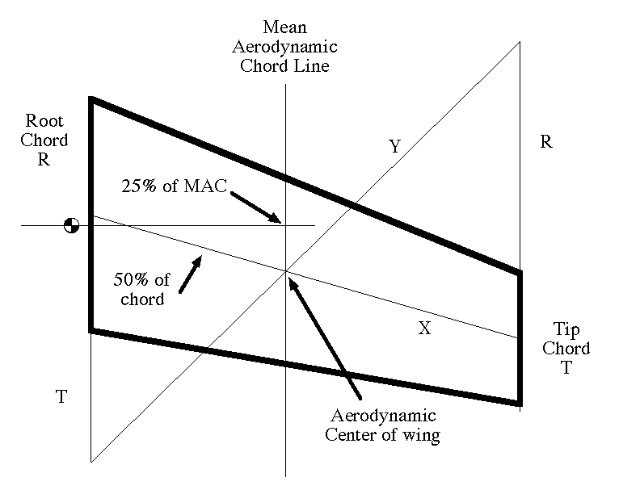

Numerous new models have met an unnecessary, and untimely, end due to the builders not determining the center of gravity The usual trick of starting with the CG at 25% of the chord of the wing works fine, when the wing is straight and untapered. Troubles arise as soon as taper and sweep rear their ugly heads. 25% is still a good starting point, but 25% of what? The Mean Aerodynamic Chord allows us to determine the CG as if the wing were straight and untapered. Placing the CG at 25% of the Mean Aerodynamic Chord will be much more successful for initial flights than just guessing.
As is often quoted, a picture is worth a thousand words. This diagram should be self explainatory with a bit of study.

Copyright 1998, Thayer Syme. All rights reserved